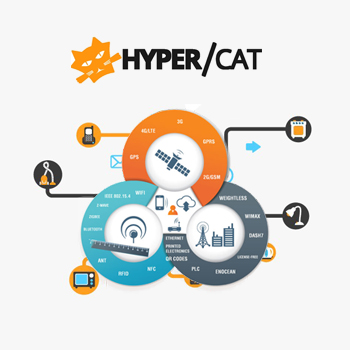

The Customized Global M2M Solution
The Customized Global M2M Solution
 The idea of the Internet of Things really is more than just wireless cams or television connected to the internet. Some concepts revolving around M2M communication and IoT have already been made a reality, very real, tangible things such as telematics solutions and applications used in smart grids, energy and gas monitoring systems, and fleet management and tracking systems, among many others. Newer technologies such as connected cars and smart homes are now being explored. However, the question remains – Will these devices find a way to communicate with each other without any language barriers?
Different devices created by different manufacturers, most likely do not share the same communication platform. Ever since M2M technology has been introduced, communication barrier among different M2M devices or modules has been an outstanding issue. Take for instance, automated appliances for the home. This particular market alone has several players in it and each uses their own sets of protocols and platforms that allows devices to communicate, send and receive messages. Consumers always want the best that the market can offer, or at the very least, want products that best suits them. In the case of home automation, juggling from one app to another can be quite inconvenient. Consumers, just as much as developers and technology innovators, would prefer having just one application and/or platform that controls everything. Bringing this need to a bigger spectrum, perhaps consumers may want to have their fridge talk to their cars. The possibilities for IoT is endless. And as innovators and developers find different ways to make life easier, more convenient and efficient, the IoT also needs protocols that will help ensure compatibility between these devices. And this is what Hypercat, the new IoT specification aims to accomplish.
But what is Hypercat and how does it work? Hypercat is a media type that allows servers to list resource catalogs, designed to make IoT services much easier. It could be a protocol or a specification that with much back up from government could become a standard for IoT semantics. It creates an online catalog that is readable by other IoT devices, enabling interoperability among these devices. According to Justin Anderson, CEO of Flexeye, one of the companies involved in its development, "Hypercat allows anybody who is using some kind of sensor to sense something – whether it's their environment, home, temperature, use of the location or speed of travel – and then make that data available in a way that others could pick up and make use of that information."
The UK Technology Strategy Board says that Hypercat will help will fuel the interoperability of devices as data is being stored in the cloud in standardized formats, making it available to more connected devices, further expanding the Internet of Things. Hypercat will also accelerate the development of M2M communication and the deployment of more connected devices into IoT. It will allow another device to access information created and stored by other devices, and pushing for this kind of open standard will help ensure that IoT is made available to all players and not just among large corporations. Some, if not most, of today's M2m technology deployed are still not completely independent of human intervention, although the idea is to connect things to a network of things totally free of any human involvement. Hypercat aims to eradicate human intervention from the equation. This part of IoT has raised concerns, noting that as more machines do what humans use to do, people will be left behind. ARM's Amyas Philips thinks otherwise, saying, "That's the wrong image. We must maintain that the Internet of Things will be fundamentally empowering."
© 2013 Parlacom, All Rights Reserved


 English
English Portuguese
Portuguese